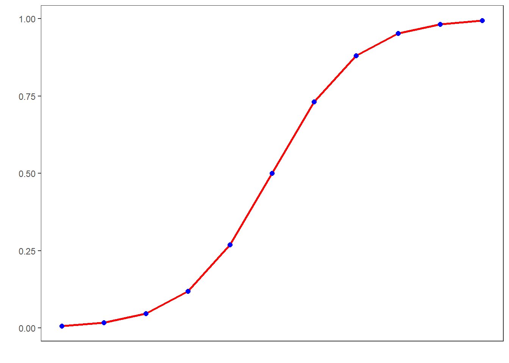
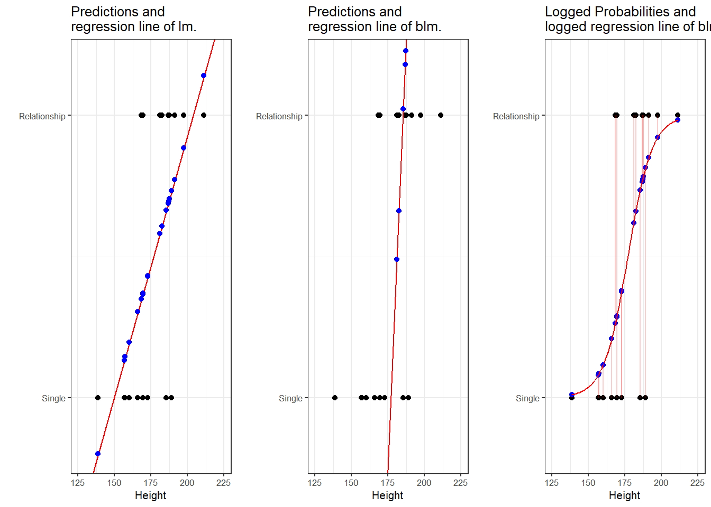
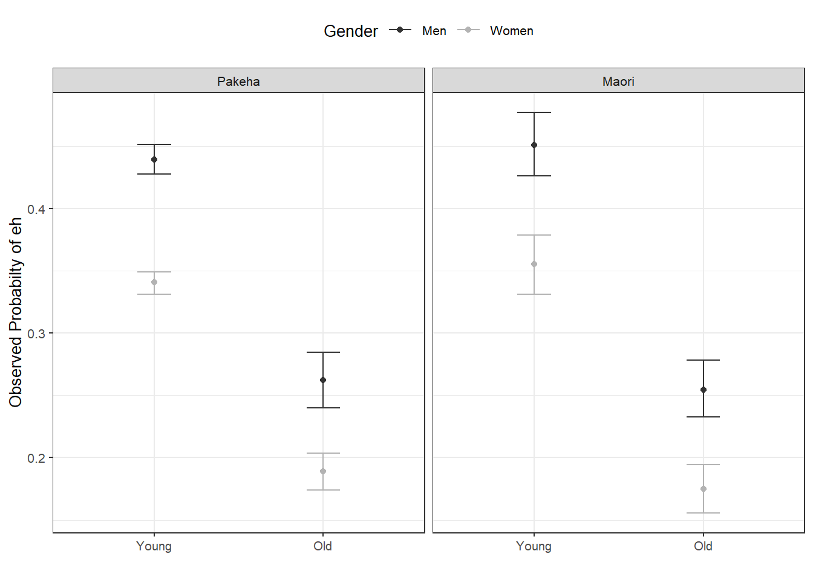
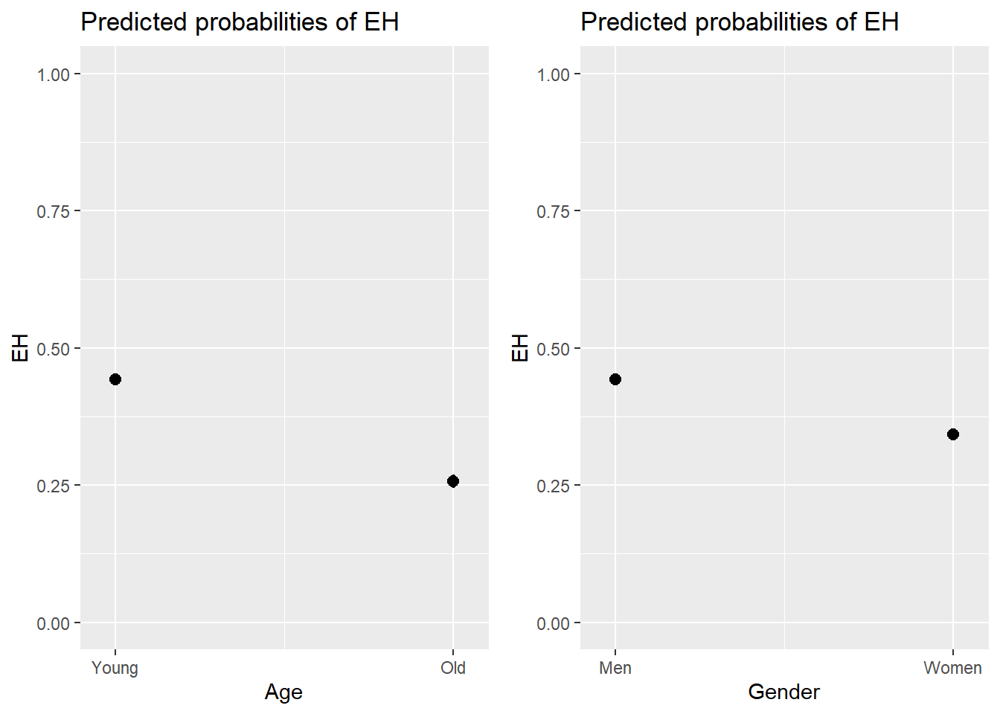
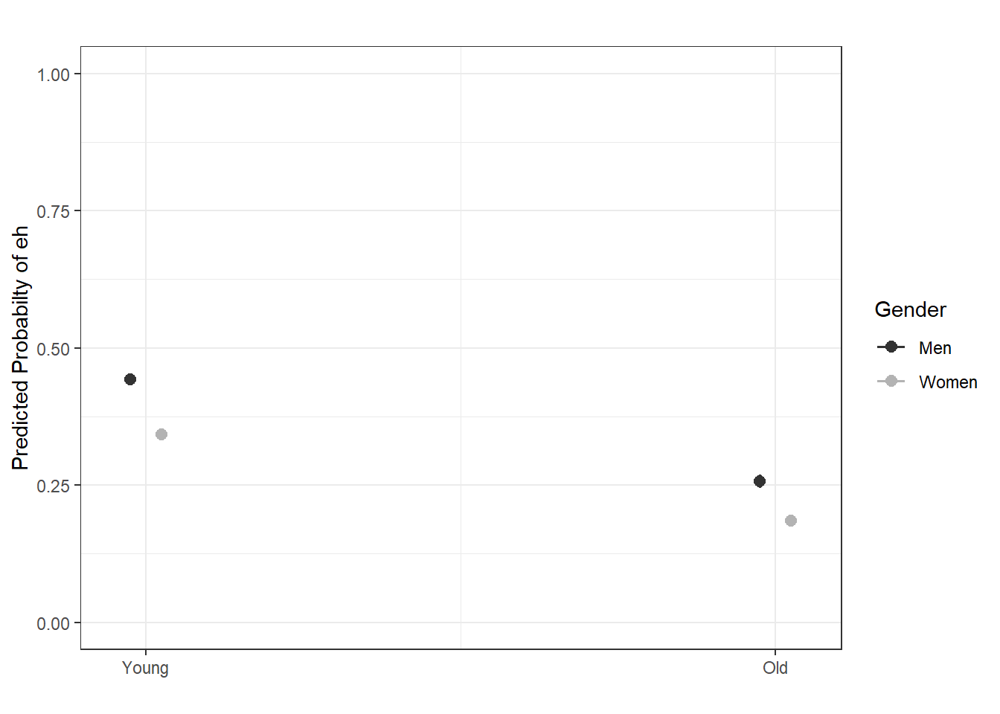
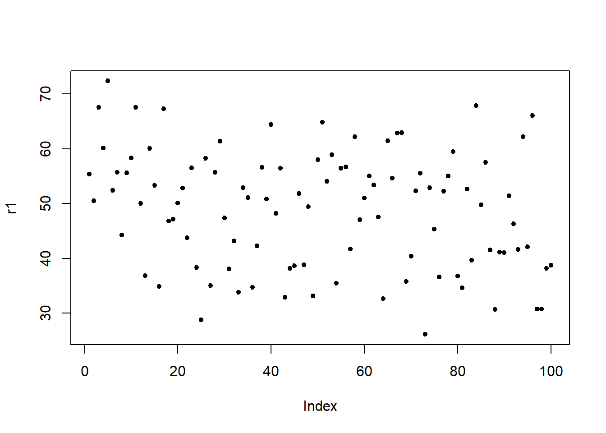
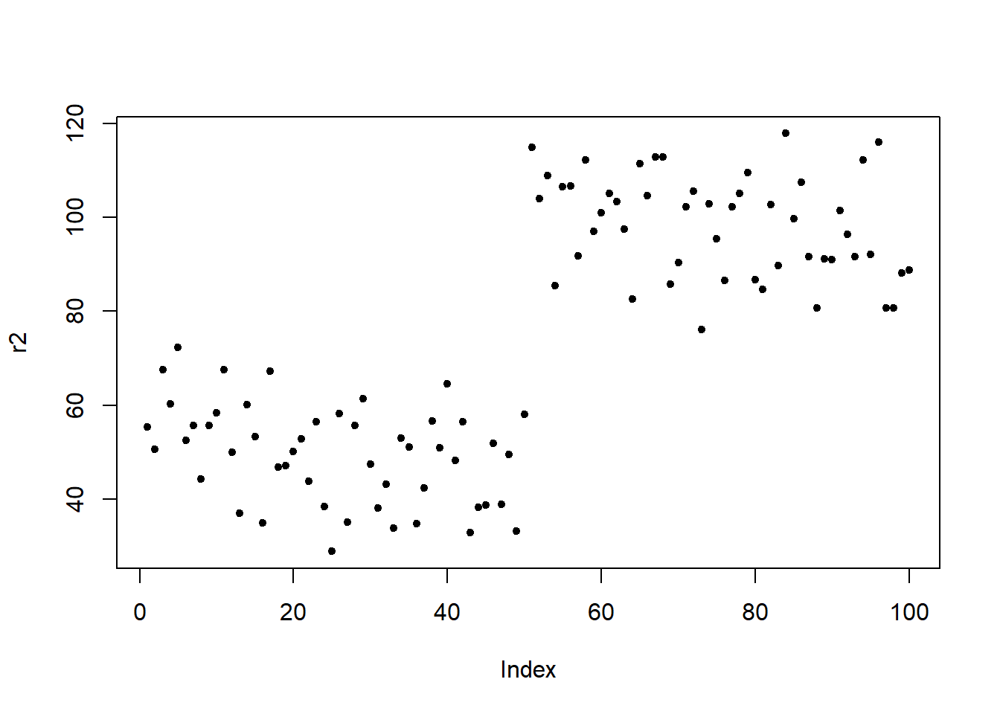

Week 10 Logistic Regression and Model Diagnostics
This week, we continue with regression analyses and expand on last week by using a regression to analyse a nominal dependent variable.
Preparation and session set up
This tutorial is based on R. If you have not installed R or are new to it, you will find an introduction to and more information how to use R here. For this tutorials, we need to install certain packages from an R library so that the scripts shown below are executed without errors. Before turning to the code below, please install the packages by running the code below this paragraph. If you have already installed the packages mentioned below, then you can skip ahead and ignore this section. To install the necessary packages, simply run the following code - it may take some time (between 1 and 5 minutes to install all of the libraries so you do not need to worry if it takes some time).
# install
install.packages("car")
install.packages("emmeans")
install.packages("effects")
install.packages("flextable")
install.packages("ggplot2")
install.packages("ggpubr")
install.packages("Hmisc")
install.packages("knitr")
install.packages("lme4")
install.packages("MASS")
install.packages("mclogit")
install.packages("MuMIn")
install.packages("nlme")
install.packages("ordinal")
install.packages("rms")
install.packages("robustbase")
install.packages("sjPlot")
install.packages("stringr")
install.packages("tibble")
install.packages("dplyr")
install.packages("vcd")
install.packages("vip")
# install klippy for copy-to-clipboard button in code chunks
install.packages("remotes")
remotes::install_github("rlesur/klippy")Now that we have installed the packages, we activate them as shown below.
# set options
options(stringsAsFactors = F) # no automatic data transformation
options("scipen" = 100, "digits" = 12) # suppress math annotation
# load packages
library(dplyr)
library(Boruta)
library(car)
library(effects)
library(emmeans)
library(flextable)
library(ggfortify)
library(ggplot2)
library(ggpubr)
library(Hmisc)
library(knitr)
library(lme4)
library(MASS)
library(mclogit)
library(MuMIn)
library(nlme)
library(ordinal)
library(rms)
library(robustbase)
library(sjPlot)
library(stringr)
library(tibble)
library(vcd)
library(vip)
# activate klippy for copy-to-clipboard button
klippy::klippy()Once you have installed R and RStudio and initiated the session by executing the code shown above, you are good to go.
10.1 Multiple Binomial Logistic Regression
Logistic regression is a multivariate analysis technique that builds on and is very similar in terms of its implementation to linear regression but logistic regressions take dependent variables that represent nominal rather than numeric scaling (Harrell Jr 2015). The difference requires that the linear regression must be modified in certain ways to avoid producing non-sensical outcomes. The most fundamental difference between logistic and linear regressions is that logistic regression work on the probabilities of an outcome (the likelihood), rather than the outcome itself. In addition, the likelihoods on which the logistic regression works must be logged (logarithmized) in order to avoid produce predictions that produce values greater than 1 (instance occurs) and 0 (instance does not occur). You can check this by logging the values from -10 to 10 using the plogis function as shown below.
round(plogis(-10:10), 5)## [1] 0.00005 0.00012 0.00034 0.00091 0.00247 0.00669 0.01799 0.04743 0.11920
## [10] 0.26894 0.50000 0.73106 0.88080 0.95257 0.98201 0.99331 0.99753 0.99909
## [19] 0.99966 0.99988 0.99995If we visualize these logged values, we get an S-shaped curve which reflects the logistic function.

To understand what this mean, we will use a very simple example. In this example, we want to see whether the height of men affect their likelihood of being in a relationship. The data we use represents a data set consisting of two variables: height and relationship.

The left panel of the Figure above shows that a linear model would predict values for the relationship status, which represents a factor (0 = Single and 1 = In a Relationship), that are nonsensical because values above 1 or below 0 do not make sense. In contrast to a linear regression, which predicts actual values, such as the frequencies of prepositions in a certain text, a logistic regression predicts probabilities of events (for example, being in a relationship) rather than actual values. The center panel shows the predictions of a logistic regression and we see that a logistic regression also has an intercept and a (very steep) slope but that the regression line also predicts values that are above 1 and below 0. However, when we log the predicted values we these predicted values are transformed into probabilities with values between 0 and 1. And the logged regression line has a S-shape which reflects the logistic function. Furthermore, we can then find the optimal line (the line with the lowest residual deviance) by comparing the sum of residuals - just as we did for a simple linear model and that way, we find the regression line for a logistic regression.
10.1.1 Example 1: EH in Kiwi English
To exemplify how to implement a logistic regression in R (see Agresti 1996; Agresti and Kateri 2011) for very good and thorough introductions to this topic], we will analyze the use of the discourse particle eh in New Zealand English and test which factors correlate with its occurrence. The data set represents speech units in a corpus that were coded for the speaker who uttered a given speech unit, the gender, ethnicity, and age of that speaker and whether or not the speech unit contained an eh. To begin with, we clean the current work space, set option, install and activate relevant packages, load customized functions, and load the example data set.
# load data
blrdata <- base::readRDS(url("https://slcladal.github.io/data/bld.rda", "rb"))ID | Gender | Age | Ethnicity | EH |
<S1A-001#M> | Men | Young | Pakeha | 0 |
<S1A-001#M> | Men | Young | Pakeha | 1 |
<S1A-001#M> | Men | Young | Pakeha | 0 |
<S1A-001#M> | Men | Young | Pakeha | 0 |
<S1A-001#M> | Men | Young | Pakeha | 1 |
<S1A-001#M> | Men | Young | Pakeha | 1 |
<S1A-001#M> | Men | Young | Pakeha | 0 |
<S1A-001#M> | Men | Young | Pakeha | 0 |
<S1A-001#M> | Men | Young | Pakeha | 0 |
<S1A-001#M> | Men | Young | Pakeha | 1 |
<S1A-001#M> | Men | Young | Pakeha | 0 |
<S1A-001#M> | Men | Young | Pakeha | 0 |
<S1A-001#M> | Men | Young | Pakeha | 1 |
<S1A-001#M> | Men | Young | Pakeha | 1 |
<S1A-001#M> | Men | Young | Pakeha | 0 |
The summary of the data show that the data set contains 25,821 observations of five variables. The variable ID contains strings that represent a combination file and speaker of a speech unit. The second variable represents the gender, the third the age, and the fourth the ethnicity of speakers. The fifth variable represents whether or not a speech unit contained the discourse particle eh.
Next, we factorize the variables in our data set. In other words, we specify that the strings represent variable levels and define new reference levels because as a default R will use the variable level which first occurs in alphabet ordering as the reference level for each variable, we redefine the variable levels for Age and Ethnicity.
blrdata <- blrdata %>%
# factorize variables
dplyr::mutate(Age = factor(Age),
Gender = factor(Gender),
Ethnicity = factor(Ethnicity),
ID = factor(ID),
EH = factor(EH)) %>%
# relevel Age (Reference = Young) and Ethnicity (Reference= Pakeha))
dplyr::mutate(Age = relevel(Age, "Young"),
Ethnicity = relevel(Ethnicity, "Pakeha"))After preparing the data, we will now plot the data to get an overview of potential relationships between variables.
blrdata %>%
dplyr::mutate(EH = ifelse(EH == "0", 0, 1)) %>%
ggplot(aes(Age, EH, color = Gender)) +
facet_wrap(~Ethnicity) +
stat_summary(fun = mean, geom = "point") +
stat_summary(fun.data = mean_cl_boot, geom = "errorbar", width = 0.2) +
theme_set(theme_bw(base_size = 10)) +
theme(legend.position = "top") +
labs(x = "", y = "Observed Probabilty of eh") +
scale_color_manual(values = c("gray20", "gray70"))
With respect to main effects, the Figure above indicates that men use eh more frequently than women, that young speakers use it more frequently compared with old speakers, and that speakers that are descendants of European settlers (Pakeha) use eh more frequently compared with Maori (the native inhabitants of New Zealand).
The plots in the lower panels do not indicate significant interactions between use of eh and the Age, Gender, and Ethnicity of speakers. In a next step, we will start building the logistic regression model.
10.1.2 Model Building
As a first step, we need to define contrasts and use the datadist function to store aspects of our variables that can be accessed later when plotting and summarizing the model. Contrasts define what and how variable levels should be compared and therefore influences how the results of the regression analysis are presented. In this case, we use treatment contrasts which are in-built. Treatment contrasts mean that we assess the significance of levels of a predictor against a baseline which is the reference level of a predictor. Field, Miles, and Field (2012, 41427) and Gries (2021) provide very good and accessible explanations of contrasts and how to manually define contrasts if you would like to know more.
# set contrasts
options(contrasts =c("contr.treatment", "contr.poly"))
# create distance matrix
blrdata.dist <- datadist(blrdata)
# include distance matrix in options
options(datadist = "blrdata.dist")Next, we generate a minimal model that predicts the use of eh solely based on the intercept.
# baseline glm model
m0.glm = glm(EH ~ 1, family = binomial, data = blrdata)10.1.3 Model fitting
We will now start with the model fitting procedure. In the present case, we will use a manual step-wise step-up procedure during which predictors are added to the model if they significantly improve the model fit. In addition, we will perform diagnostics as we fit the model at each step of the model fitting process rather than after the fitting.
We will test two things in particular: whether the data has incomplete information or complete separation and if the model suffers from (multi-)collinearity.
Incomplete information or complete separation means that the data does not contain all combinations of the predictor or the dependent variable. This is important because if the data does not contain cases of all combinations, the model will assume that it has found a perfect predictor. In such cases the model overestimates the effect of that that predictor and the results of that model are no longer reliable. For example, if eh was only used by young speakers in the data, the model would jump on that fact and say Ha! If there is an old speaker, that means that that speaker will never ever and under no circumstances say eh* - I can therefore ignore all other factors!*
Multicollinearity means that predictors correlate and have shared variance. This means that whichever predictor is included first will take all the variance that it can explain and the remaining part of the variable that is shared will not be attributed to the other predictor. This may lead to reporting that a factor is not significant because all of the variance it can explain is already accounted for. However, if the other predictor were included first, then the original predictor would be returned as insignificant. This means that- depending on the order in which predictors are added - the results of the regression can differ dramatically and the model is therefore not reliable. Multicollinearity is actually a very common problem and there are various ways to deal with it but it cannot be ignored (at least in regression analyses).
We will start by adding Age to the minimal adequate model.
# check incomplete information
ifelse(min(ftable(blrdata$Age, blrdata$EH)) == 0, "not possible", "possible")## [1] "possible"# add age to the model
m1.glm = glm(EH ~ Age, family = binomial, data = blrdata)
# check multicollinearity (vifs should have values of 3 or lower for main effects)
ifelse(max(vif(m1.glm)) <= 3, "vifs ok", "WARNING: high vifs!") # VIFs ok## [1] "vifs ok"# check if adding Age significantly improves model fit
anova(m1.glm, m0.glm, test = "Chi")## Analysis of Deviance Table
##
## Model 1: EH ~ Age
## Model 2: EH ~ 1
## Resid. Df Resid. Dev Df Deviance Pr(>Chi)
## 1 25819 32376.86081
## 2 25820 33007.75469 -1 -630.8938871 < 0.000000000000000222 ***
## ---
## Signif. codes: 0 '***' 0.001 '**' 0.01 '*' 0.05 '.' 0.1 ' ' 1As the data does not contain incomplete information, the vif values are below 3, and adding Age has significantly improved the model fit (the p-value of the ANOVA is lower than .05). We therefore proceed with Age included.
We continue by adding Gender. We add a second ANOVA test to see if including Gender affects the significance of other predictors in the model. If this were the case - if adding Gender would cause Age to become insignificant - then we could change the ordering in which we include predictors into our model.
ifelse(min(ftable(blrdata$Gender, blrdata$EH)) == 0, "not possible", "possible")## [1] "possible"m2.glm <- update(m1.glm, . ~ . +Gender)
ifelse(max(vif(m2.glm)) <= 3, "vifs ok", "WARNING: high vifs!") # VIFs ok## [1] "vifs ok"anova(m2.glm, m1.glm, test = "Chi")## Analysis of Deviance Table
##
## Model 1: EH ~ Age + Gender
## Model 2: EH ~ Age
## Resid. Df Resid. Dev Df Deviance Pr(>Chi)
## 1 25818 32139.54089
## 2 25819 32376.86081 -1 -237.319914 < 0.000000000000000222 ***
## ---
## Signif. codes: 0 '***' 0.001 '**' 0.01 '*' 0.05 '.' 0.1 ' ' 1Anova(m2.glm, test = "LR")## Analysis of Deviance Table (Type II tests)
##
## Response: EH
## LR Chisq Df Pr(>Chisq)
## Age 668.6350712 1 < 0.000000000000000222 ***
## Gender 237.3199140 1 < 0.000000000000000222 ***
## ---
## Signif. codes: 0 '***' 0.001 '**' 0.01 '*' 0.05 '.' 0.1 ' ' 1Again, including Gender significantly improves model fit and the data does not contain incomplete information or complete separation. Also, including Gender does not affect the significance of Age. Now, we include Ethnicity.
ifelse(min(ftable(blrdata$Ethnicity, blrdata$EH)) == 0, "not possible", "possible")## [1] "possible"m3.glm <- update(m2.glm, . ~ . +Ethnicity)
ifelse(max(vif(m3.glm)) <= 3, "vifs ok", "WARNING: high vifs!") # VIFs ok## [1] "vifs ok"anova(m3.glm, m2.glm, test = "Chi")## Analysis of Deviance Table
##
## Model 1: EH ~ Age + Gender + Ethnicity
## Model 2: EH ~ Age + Gender
## Resid. Df Resid. Dev Df Deviance Pr(>Chi)
## 1 25817 32139.27988
## 2 25818 32139.54089 -1 -0.2610145387 0.60942Since adding Ethnicity does not significantly improve the model fit, we do not need to test if its inclusion affects the significance of other predictors. We continue without Ethnicity and include the interaction between Age and Gender.
ifelse(min(ftable(blrdata$Age, blrdata$Gender, blrdata$EH)) == 0, "not possible", "possible")## [1] "possible"m4.glm <- update(m2.glm, . ~ . +Age*Gender)
ifelse(max(vif(m4.glm)) <= 3, "vifs ok", "WARNING: high vifs!") # VIFs ok## [1] "vifs ok"anova(m4.glm, m2.glm, test = "Chi")## Analysis of Deviance Table
##
## Model 1: EH ~ Age + Gender + Age:Gender
## Model 2: EH ~ Age + Gender
## Resid. Df Resid. Dev Df Deviance Pr(>Chi)
## 1 25817 32139.41665
## 2 25818 32139.54089 -1 -0.124239923 0.72448The interaction between Age and Gender is not significant which means that men and women do not behave differently with respect to their use of EH as they age. Also, the data does not contain incomplete information and the model does not suffer from multicollinearity - the predictors are not collinear. We can now include if there is a significant interaction between Age and Ethnicity.
ifelse(min(ftable(blrdata$Age, blrdata$Ethnicity, blrdata$EH)) == 0, "not possible", "possible")## [1] "possible"m5.glm <- update(m2.glm, . ~ . +Age*Ethnicity)
ifelse(max(vif(m5.glm)) <= 3, "vifs ok", "WARNING: high vifs!") # VIFs ok## [1] "vifs ok"anova(m5.glm, m2.glm, test = "Chi")## Analysis of Deviance Table
##
## Model 1: EH ~ Age + Gender + Ethnicity + Age:Ethnicity
## Model 2: EH ~ Age + Gender
## Resid. Df Resid. Dev Df Deviance Pr(>Chi)
## 1 25816 32136.47224
## 2 25818 32139.54089 -2 -3.068654514 0.2156Again, no incomplete information or multicollinearity and no significant interaction. Now, we test if there exists a significant interaction between Gender and Ethnicity.
ifelse(min(ftable(blrdata$Gender, blrdata$Ethnicity, blrdata$EH)) == 0, "not possible", "possible")## [1] "possible"m6.glm <- update(m2.glm, . ~ . +Gender*Ethnicity)
ifelse(max(vif(m6.glm)) <= 3, "vifs ok", "WARNING: high vifs!") # VIFs ok## [1] "vifs ok"anova(m6.glm, m2.glm, test = "Chi")## Analysis of Deviance Table
##
## Model 1: EH ~ Age + Gender + Ethnicity + Gender:Ethnicity
## Model 2: EH ~ Age + Gender
## Resid. Df Resid. Dev Df Deviance Pr(>Chi)
## 1 25816 32139.26864
## 2 25818 32139.54089 -2 -0.2722521835 0.87273As the interaction between Gender and Ethnicity is not significant, we continue without it. In a final step, we include the three-way interaction between Age, Gender, and Ethnicity.
ifelse(min(ftable(blrdata$Age, blrdata$Gender, blrdata$Ethnicity, blrdata$EH)) == 0, "not possible", "possible")## [1] "possible"m7.glm <- update(m2.glm, . ~ . +Gender*Ethnicity)
ifelse(max(vif(m7.glm)) <= 3, "vifs ok", "WARNING: high vifs!") # VIFs ok## [1] "vifs ok"anova(m7.glm, m2.glm, test = "Chi")## Analysis of Deviance Table
##
## Model 1: EH ~ Age + Gender + Ethnicity + Gender:Ethnicity
## Model 2: EH ~ Age + Gender
## Resid. Df Resid. Dev Df Deviance Pr(>Chi)
## 1 25816 32139.26864
## 2 25818 32139.54089 -2 -0.2722521835 0.87273We have found our final minimal adequate model because the 3-way interaction is also insignificant. As we have now arrived at the final minimal adequate model (m2.glm), we generate a final minimal model using the lrm function.
m2.lrm <- lrm(EH ~ Age+Gender, data = blrdata, x = T, y = T, linear.predictors = T)
m2.lrm## Logistic Regression Model
##
## lrm(formula = EH ~ Age + Gender, data = blrdata, x = T, y = T,
## linear.predictors = T)
##
## Model Likelihood Discrimination Rank Discrim.
## Ratio Test Indexes Indexes
## Obs 25821 LR chi2 868.21 R2 0.046 C 0.602
## 0 17114 d.f. 2 R2(2,25821)0.033 Dxy 0.203
## 1 8707 Pr(> chi2) <0.0001 R2(2,17312.8)0.049 gamma 0.302
## max |deriv| 3e-10 Brier 0.216 tau-a 0.091
##
## Coef S.E. Wald Z Pr(>|Z|)
## Intercept -0.2324 0.0223 -10.44 <0.0001
## Age=Old -0.8305 0.0335 -24.78 <0.0001
## Gender=Women -0.4201 0.0273 -15.42 <0.0001
## anova(m2.lrm)## Wald Statistics Response: EH
##
## Factor Chi-Square d.f. P
## Age 614.04 1 <.0001
## Gender 237.65 1 <.0001
## TOTAL 802.65 2 <.0001After fitting the model, we validate the model to avoid arriving at a final minimal model that is overfitted to the data at hand.
10.1.4 Model Validation
To validate a model, you can apply the validate function and apply it to a saturated model. The output of the validate function shows how often predictors are retained if the sample is re-selected with the same size but with placing back drawn data points. The execution of the function requires some patience as it is rather computationally expensive and it is, therefore, commented out below.
# model validation (remove # to activate: output too long for website)
m7.lrm <- lrm(EH ~ (Age+Gender+Ethnicity)^3, data = blrdata, x = T, y = T, linear.predictors = T)
#validate(m7.lrm, bw = T, B = 200)The validate function shows that retaining two predictors (Age and Gender) is the best option and thereby confirms our final minimal adequate model as the best minimal model. In addition, we check whether we need to include a penalty for data points because they have too strong of an impact of the model fit. To see whether a penalty is warranted, we apply the pentrace function to the final minimal adequate model.
pentrace(m2.lrm, seq(0, 0.8, by = 0.05)) # determine penalty##
## Best penalty:
##
## penalty df
## 0.8 1.99925395138
##
## penalty df aic bic aic.c
## 0.00 2.00000000000 864.213801108 847.895914321 864.213336316
## 0.05 1.99995335085 864.213893816 847.896387637 864.213429042
## 0.10 1.99990670452 864.213985335 847.896859740 864.213520579
## 0.15 1.99986006100 864.214075641 847.897330609 864.213610904
## 0.20 1.99981342030 864.214164764 847.897800270 864.213700044
## 0.25 1.99976678241 864.214252710 847.898268733 864.213788009
## 0.30 1.99972014734 864.214339446 847.898735961 864.213874762
## 0.35 1.99967351509 864.214424993 847.899201978 864.213960327
## 0.40 1.99962688564 864.214509360 847.899666792 864.214044712
## 0.45 1.99958025902 864.214592526 847.900130382 864.214127896
## 0.50 1.99953363520 864.214674504 847.900592761 864.214209892
## 0.55 1.99948701420 864.214755279 847.901053914 864.214290685
## 0.60 1.99944039601 864.214834874 847.901513865 864.214370299
## 0.65 1.99939378063 864.214913276 847.901972599 864.214448719
## 0.70 1.99934716807 864.214990480 847.902430112 864.214525941
## 0.75 1.99930055832 864.215066506 847.902886425 864.214601985
## 0.80 1.99925395138 864.215141352 847.903341534 864.214676849The values are so similar that a penalty is unnecessary. In a next step, we rename the final models.
lr.glm <- m2.glm # rename final minimal adequate glm model
lr.lrm <- m2.lrm # rename final minimal adequate lrm modelNow, we calculate a Model Likelihood Ratio Test to check if the final model performs significantly better than the initial minimal base-line model. The result of this test is provided as a default if we call a summary of the lrm object.
modelChi <- lr.glm$null.deviance - lr.glm$deviance
chidf <- lr.glm$df.null - lr.glm$df.residual
chisq.prob <- 1 - pchisq(modelChi, chidf)
modelChi; chidf; chisq.prob## [1] 868.21380111## [1] 2## [1] 0The code above provides three values: a \(\chi\)2, the degrees of freedom, and a p-value. The p-value is lower than .05 and the results of the Model Likelihood Ratio Test therefore confirm that the final minimal adequate model performs significantly better than the initial minimal base-line model. Another way to extract the model likelihood test statistics is to use an ANOVA to compare the final minimal adequate model to the minimal base-line model.
A handier way to get these statistics is by performing an ANOVA on the final minimal model which, if used this way, is identical to a Model Likelihood Ratio test.
anova(m0.glm, lr.glm, test = "Chi") # Model Likelihood Ratio Test## Analysis of Deviance Table
##
## Model 1: EH ~ 1
## Model 2: EH ~ Age + Gender
## Resid. Df Resid. Dev Df Deviance Pr(>Chi)
## 1 25820 33007.75469
## 2 25818 32139.54089 2 868.2138011 < 0.000000000000000222 ***
## ---
## Signif. codes: 0 '***' 0.001 '**' 0.01 '*' 0.05 '.' 0.1 ' ' 1In a next step, we calculate pseudo-R2 values which represent the amount of residual variance that is explained by the final minimal adequate model. We cannot use the ordinary R2 because the model works on the logged probabilities rather than the values of the dependent variable.
# calculate pseudo R^2
# number of cases
ncases <- length(fitted(lr.glm))
R2.hl <- modelChi/lr.glm$null.deviance
R.cs <- 1 - exp ((lr.glm$deviance - lr.glm$null.deviance)/ncases)
R.n <- R.cs /( 1- ( exp (-(lr.glm$null.deviance/ ncases))))
# function for extracting pseudo-R^2
logisticPseudoR2s <- function(LogModel) {
dev <- LogModel$deviance
nullDev <- LogModel$null.deviance
modelN <- length(LogModel$fitted.values)
R.l <- 1 - dev / nullDev
R.cs <- 1- exp ( -(nullDev - dev) / modelN)
R.n <- R.cs / ( 1 - ( exp (-(nullDev / modelN))))
cat("Pseudo R^2 for logistic regression\n")
cat("Hosmer and Lemeshow R^2 ", round(R.l, 3), "\n")
cat("Cox and Snell R^2 ", round(R.cs, 3), "\n")
cat("Nagelkerke R^2 ", round(R.n, 3), "\n") }
logisticPseudoR2s(lr.glm)## Pseudo R^2 for logistic regression
## Hosmer and Lemeshow R^2 0.026
## Cox and Snell R^2 0.033
## Nagelkerke R^2 0.046The low pseudo-R2 values show that our model has very low explanatory power. For instance, the value of Hosmer and Lemeshow R2 (0.026) is the proportional reduction in the absolute value of the log-likelihood measure and as such it is a measure of how much the badness of fit improves as a result of the inclusion of the predictor variables (Field, Miles, and Field 2012, 317). In essence, all the pseudo-R2 values are measures of how substantive the model is (how much better it is compared to a baseline model). Next, we extract the confidence intervals for the coefficients of the model.
# extract the confidence intervals for the coefficients
confint(lr.glm)## 2.5 % 97.5 %
## (Intercept) -0.276050866670 -0.188778707810
## AgeOld -0.896486392278 -0.765095825382
## GenderWomen -0.473530977637 -0.366703827307Despite having low explanatory and predictive power, the age of speakers and their gender are significant as the confidence intervals of the coefficients do not overlap with 0.
10.1.5 Effect Size
In a next step, we compute odds ratios and their confidence intervals. Odds Ratios represent a common measure of effect size and can be used to compare effect sizes across models. Odds ratios rang between 0 and infinity. Values of 1 indicate that there is no effect. The further away the values are from 1, the stronger the effect. If the values are lower than 1, then the variable level correlates negatively with the occurrence of the outcome (the probability decreases) while values above 1 indicate a positive correlation and show that the variable level causes an increase in the probability of the outcome (the occurrence of EH).
exp(lr.glm$coefficients) # odds ratios## (Intercept) AgeOld GenderWomen
## 0.792642499264 0.435815384592 0.656972294902exp(confint(lr.glm)) # confidence intervals of the odds ratios## Es wird auf das Profilieren gewartet ...## 2.5 % 97.5 %
## (Intercept) 0.758774333456 0.827969709653
## AgeOld 0.408000698619 0.465289342309
## GenderWomen 0.622799290871 0.693014866732The odds ratios confirm that older speakers use eh significantly less often compared with younger speakers and that women use eh less frequently than men as the confidence intervals of the odds rations do not overlap with 1. In a next step, we calculate the prediction accuracy of the model.
10.1.6 Prediction Accuracy
In order to calculate the prediction accuracy of the model, we generate a variable called Prediction that contains the predictions of pour model and which we add to the data. Then, we use the confusionMatrix function from the caret package (Kuhn 2021) to extract the prediction accuracy.
# create variable with contains the prediction of the model
blrdata <- blrdata %>%
dplyr::mutate(Prediction = predict(lr.glm, type = "response"),
Prediction = ifelse(Prediction > .5, 1, 0),
Prediction = factor(Prediction, levels = c("0", "1")),
EH = factor(EH, levels = c("0", "1")))
# create a confusion matrix with compares observed against predicted values
caret::confusionMatrix(blrdata$Prediction, blrdata$EH)## Confusion Matrix and Statistics
##
## Reference
## Prediction 0 1
## 0 17114 8707
## 1 0 0
##
## Accuracy : 0.66279385
## 95% CI : (0.656990096, 0.668560948)
## No Information Rate : 0.66279385
## P-Value [Acc > NIR] : 0.5029107
##
## Kappa : 0
##
## Mcnemar's Test P-Value : < 0.00000000000000022
##
## Sensitivity : 1.00000000
## Specificity : 0.00000000
## Pos Pred Value : 0.66279385
## Neg Pred Value : NaN
## Prevalence : 0.66279385
## Detection Rate : 0.66279385
## Detection Prevalence : 1.00000000
## Balanced Accuracy : 0.50000000
##
## 'Positive' Class : 0
## We can see that out model has never predicted the use of eh which is common when dealing with rare phenomena. This is expected as the event s so rare that the probability of it not occurring substantively outweighs the probability of it occurring. As such, the prediction accuracy of our model is not significantly better compared to the prediction accuracy of the baseline model which is the no-information rate (NIR)) (p = 0.5029).
We can use the plot_model function from the sjPlot package (Ldecke 2021) to visualize the effects.
# predicted probability
efp1 <- plot_model(lr.glm, type = "pred", terms = c("Age"), axis.lim = c(0, 1))
# predicted percentage
efp2 <- plot_model(lr.glm, type = "pred", terms = c("Gender"), axis.lim = c(0, 1))
grid.arrange(efp1, efp2, nrow = 1)
And we can also combine the visualization of the effects in a single plot as shown below.
sjPlot::plot_model(lr.glm, type = "pred", terms = c("Age", "Gender"), axis.lim = c(0, 1)) +
theme(legend.position = "top") +
labs(x = "", y = "Predicted Probabilty of eh", title = "") +
scale_color_manual(values = c("gray20", "gray70"))
10.1.7 Model Diagnostics
We are now in a position to perform model diagnostics and test if the model violates distributional requirements. In a first step, we test for the existence of multicollinearity.
10.1.8 Multicollinearity
Multicollinearity means that predictors in a model can be predicted by other predictors in the model (this means that they share variance with other predictors). If this is the case, the model results are unreliable because the presence of absence of one predictor has substantive effects on at least one other predictor.
To check whether the final minimal model contains predictors that correlate with each other, we extract variance inflation factors (VIF). If a model contains predictors that have variance inflation factors (VIF) > 10 the model is unreliable (Myers 1990). Gries (2021) shows that a VIF of 10 means that that predictor is explainable (predictable) from the other predictors in the model with an R2 of .9 (a VIF of 5 means that predictor is explainable (predictable) from the other predictors in the model with an R2 of .8).Indeed, predictors with VIF values greater than 4 are usually already problematic but, for large data sets, even VIFs greater than 2 can lead inflated standard errors (Jaeger 2013). Also, VIFs of 2.5 can be problematic (Szmrecsanyi 2006, 215) and (Zuur, Ieno, and Elphick 2010) proposes that variables with VIFs exceeding 3 should be removed.
NOTE
However, (multi-)collinearity is only an issue if one is interested in interpreting regression results! If the interpretation is irrelevant because what is relevant is prediction(!), then it does not matter if the model contains collinear predictors! See Gries (2021) or the excursion below for a more elaborate explanation.
EXCURSION
`
What is multicollinearity?
Answer
During the workshop on mixed-effects modeling, we talked about (multi-)collinearity and someone asked if collinearity reflected shared variance (what I thought) or predictability of variables (what the other person thought). Both answers are correct! We will see below why
(Multi-)collinearity reflects the predictability of predictors based on the values of other predictors!
To test this, I generate a data set with 4 independent variables a, b, c, and d as well as two potential response variables r1 (which is random) and r2 (where the first 50 data points are the same as in r1 but for the second 50 data points I have added a value of 50 to the data points 51 to 100 from r1). This means that the predictors a and d should both strongly correlate with r2.
# load packages
library(dplyr)
library(rms)
# create data set
# responses
# 100 random numbers
r1 <- rnorm(100, 50, 10)
# 50 smaller + 50 larger numbers
r2 <- c(r1[1:50], r1[51:100] + 50)
# predictors
a <- c(rep("1", 50), rep ("0", 50))
b <- rep(c(rep("1", 25), rep ("0", 25)), 2)
c <- rep(c(rep("1", 10), rep("0", 10)), 5)
d <- c(rep("1", 47), rep ("0", 3), rep ("0", 47), rep ("1", 3))
# create data set
df <- data.frame(r1, r2, a, b, c, d)| r1 | r2 | a | b | c | d |
|---|---|---|---|---|---|
| 55.3805120133 | 55.3805120133 | 1 | 1 | 1 | 1 |
| 50.5169933942 | 50.5169933942 | 1 | 1 | 1 | 1 |
| 67.5135734932 | 67.5135734932 | 1 | 1 | 1 | 1 |
| 60.1733973728 | 60.1733973728 | 1 | 1 | 1 | 1 |
| 72.3678161278 | 72.3678161278 | 1 | 1 | 1 | 1 |
| 52.4309002788 | 52.4309002788 | 1 | 1 | 1 | 1 |
| 55.6904236277 | 55.6904236277 | 1 | 1 | 1 | 1 |
| 44.2366484882 | 44.2366484882 | 1 | 1 | 1 | 1 |
| 55.5987335816 | 55.5987335816 | 1 | 1 | 1 | 1 |
| 58.3120761737 | 58.3120761737 | 1 | 1 | 1 | 1 |
Here are the visualizations of r1 and r2

Fit first model
Now, I fit a first model. As the response is random, we do not expect any of the predictors to have a significant effect and we expect the R2 to be rather low.
m1 <- lm(r1 ~ a + b + c + d, data = df)
# inspect model
summary(m1) ##
## Call:
## lm(formula = r1 ~ a + b + c + d, data = df)
##
## Residuals:
## Min 1Q Median 3Q Max
## -25.076373713 -7.774694324 0.933388851 6.630369791 22.021652947
##
## Coefficients:
## Estimate Std. Error t value Pr(>|t|)
## (Intercept) 46.077236782 2.059313248 22.37505 < 0.0000000000000002 ***
## a1 5.957479586 4.593681927 1.29689 0.197812
## b1 5.148440925 2.098541787 2.45334 0.015977 *
## c1 -0.213502165 2.188893729 -0.09754 0.922504
## d1 -5.232737413 4.515342995 -1.15888 0.249410
## ---
## Signif. codes: 0 '***' 0.001 '**' 0.01 '*' 0.05 '.' 0.1 ' ' 1
##
## Residual standard error: 10.4927089 on 95 degrees of freedom
## Multiple R-squared: 0.075627922, Adjusted R-squared: 0.0367069924
## F-statistic: 1.94311705 on 4 and 95 DF, p-value: 0.109586389We now check for (multi-)collinearity using the vif function from the rms package (Harrell Jr 2021). Variables a and d should have high variance inflation factor values (vif-values) because they overlap very much!
# extract vifs
rms::vif(m1) ## a1 b1 c1 d1
## 4.79166666667 1.00000000000 1.08796296296 4.62962962963Variables a and d do indeed have high vif-values.
Fit second model
We now fit a second model to the response which has higher values for the latter part of the response. Both a and d strongly correlate with the response. But because a and d are collinear, d should not be reported as being significant by the model. The R2 of the model should be rather high (given the correlation between the response r2 and a and d).
m2 <- lm(r2 ~ a + b + c + d, data = df)
# inspect model
summary(m2) ##
## Call:
## lm(formula = r2 ~ a + b + c + d, data = df)
##
## Residuals:
## Min 1Q Median 3Q Max
## -25.076373713 -7.774694324 0.933388851 6.630369791 22.021652947
##
## Coefficients:
## Estimate Std. Error t value Pr(>|t|)
## (Intercept) 96.077236782 2.059313248 46.65499 < 0.000000000000000222 ***
## a1 -44.042520414 4.593681927 -9.58763 0.0000000000000012574 ***
## b1 5.148440925 2.098541787 2.45334 0.015977 *
## c1 -0.213502165 2.188893729 -0.09754 0.922504
## d1 -5.232737413 4.515342995 -1.15888 0.249410
## ---
## Signif. codes: 0 '***' 0.001 '**' 0.01 '*' 0.05 '.' 0.1 ' ' 1
##
## Residual standard error: 10.4927089 on 95 degrees of freedom
## Multiple R-squared: 0.851726565, Adjusted R-squared: 0.845483473
## F-statistic: 136.427041 on 4 and 95 DF, p-value: < 0.0000000000000002220446Again, we extract the vif-values.
# extract vifs
rms::vif(m2) ## a1 b1 c1 d1
## 4.79166666667 1.00000000000 1.08796296296 4.62962962963The vif-values are identical which shows that what matters is if the variables are predictable. To understand how we arrive at vif-values, we inspect the model matrix.
# inspect model matrix
mm <- model.matrix(m2)| (Intercept) | a1 | b1 | c1 | d1 |
|---|---|---|---|---|
| 1 | 1 | 1 | 1 | 1 |
| 1 | 1 | 1 | 1 | 1 |
| 1 | 1 | 1 | 1 | 1 |
| 1 | 1 | 1 | 1 | 1 |
| 1 | 1 | 1 | 1 | 1 |
| 1 | 1 | 1 | 1 | 1 |
| 1 | 1 | 1 | 1 | 1 |
| 1 | 1 | 1 | 1 | 1 |
| 1 | 1 | 1 | 1 | 1 |
| 1 | 1 | 1 | 1 | 1 |
| 1 | 1 | 1 | 0 | 1 |
| 1 | 1 | 1 | 0 | 1 |
| 1 | 1 | 1 | 0 | 1 |
| 1 | 1 | 1 | 0 | 1 |
| 1 | 1 | 1 | 0 | 1 |
We now fit a linear model in which we predict d from the other predictors in the model matrix.
mt <- lm(mm[,5] ~ mm[,1:4])
summary(mt)$r.squared ## [1] 0.784The R2 shows that the values of d are explained to 78.4 percent by the values of the other predictors in the model.
Now, we can write a function (taken from Gries 2021) that converts this R2 value
R2.to.VIF <- function(some.modelmatrix.r2) {
return(1/(1-some.modelmatrix.r2)) }
R2.to.VIF(0.784) ## [1] 4.62962962963The function outputs the vif-value of d. This shows that the vif-value of d represents its predictability from the other predictors in the model matrix which represents the amount of shared variance between d and the other predictors in the model.
`
We now extract and check the VIFs of the model.
vif(lr.glm)## AgeOld GenderWomen
## 1.00481494539 1.00481494539In addition, predictors with 1/VIF values \(<\) .1 must be removed (data points with values above .2 are considered problematic) (Menard 1995) and the mean value of VIFs should be \(~\) 1 (Bowerman and OConnell 1990).
mean(vif(lr.glm))## [1] 1.0048149453910.1.9 Outlier detection
In order to detect potential outliers, we will calculate diagnostic parameters and add these to our data set.
infl <- influence.measures(lr.glm) # calculate influence statistics
blrdata <- data.frame(blrdata, infl[[1]], infl[[2]]) # add influence statisticsIn a next step, we use these diagnostic parameters to check if there are data points which should be removed as they unduly affect the model fit.
10.1.10 Sample Size
We now check whether the sample size is sufficient for our analysis (Green 1991).
if you are interested in the overall model: 50 + 8k (k = number of predictors)
if you are interested in individual predictors: 104 + k
if you are interested in both: take the higher value!
# function to evaluate sample size
smplesz <- function(x) {
ifelse((length(x$fitted) < (104 + ncol(summary(x)$coefficients)-1)) == TRUE,
return(
paste("Sample too small: please increase your sample by ",
104 + ncol(summary(x)$coefficients)-1 - length(x$fitted),
" data points", collapse = "")),
return("Sample size sufficient")) }
# apply unction to model
smplesz(lr.glm)## [1] "Sample size sufficient"According to rule of thumb provided in Green (1991), the sample size is sufficient for our analysis.
10.1.11 Summarizing Results
As a final step, we summarize our findings in tabulated form.
sjPlot::tab_model(lr.glm)| EH | |||
|---|---|---|---|
| Predictors | Odds Ratios | CI | p |
| (Intercept) | 0.79 | 0.760.83 | <0.001 |
| Age [Old] | 0.44 | 0.410.47 | <0.001 |
| Gender [Women] | 0.66 | 0.620.69 | <0.001 |
| Observations | 25821 | ||
| R2 Tjur | 0.032 | ||
A more detailed summary table can be retrieved as follows:
# load function
source("https://slcladal.github.io/rscripts/blrsummary.r")
# calculate accuracy
predict.acc <- caret::confusionMatrix(blrdata$Prediction, blrdata$EH)
predict.acc <- predict.acc[3]$overall[[1]]
# create summary table
blrsummarytb <- blrsummary(lr.glm, lr.lrm, predict.acc) Statistics | Estimate | VIF | OddsRatio | CI(2.5%) | CI(97.5%) | Std. Error | z value | Pr(>|z|) | Significance |
(Intercept) | -0.23 | 0.79 | 0.76 | 0.83 | 0.02 | -10.44 | 0 | p < .001*** | |
AgeOld | -0.83 | 1 | 0.44 | 0.41 | 0.47 | 0.03 | -24.78 | 0 | p < .001*** |
GenderWomen | -0.42 | 1 | 0.66 | 0.62 | 0.69 | 0.03 | -15.42 | 0 | p < .001*** |
Model statistics | Value | ||||||||
Number of cases in model | 25821 | ||||||||
Observed misses | 0 : | 17114 | |||||||
Observed successes | 1 : | 8707 | |||||||
Null deviance | 33007.75 | ||||||||
Residual deviance | 32139.54 | ||||||||
R2 (Nagelkerke) | 0.046 | ||||||||
R2 (Hosmer & Lemeshow) | 0.026 | ||||||||
R2 (Cox & Snell) | 0.033 | ||||||||
C | 0.602 | ||||||||
Somers' Dxy | 0.203 | ||||||||
AIC | 32145.54 | ||||||||
Prediction accuracy | 0.66% | ||||||||
Model Likelihood Ratio Test | Model L.R.: 868.21 | df: 2 | p-value: 0 | sig: p < .001*** |
R2 (Hosmer & Lemeshow)
Hosmer and Lemeshows R2 is the proportional reduction in the absolute value of the log-likelihood measure and as such it is a measure of how much the badness of fit improves as a result of the inclusion of the predictor variables. It can vary between 0 (indicating that the predictors are useless at predicting the outcome variable) and 1 (indicating that the model predicts the outcome variable perfectly) (Field, Miles, and Field 2012, 317).
R2 (Cox & Snell)
Cox and Snells R2 (1989) is based on the deviance of the model (-2LL(new) and the deviance of the baseline model (-2LL(baseline), and the sample size, n []. However, this statistic never reaches its theoretical maximum of 1.
R2 (Nagelkerke)
Since R2 (Cox & Snell) never reaches its theoretical maximum of 1, Nagelkerke (1991) suggested Nagelkerkes R2 (Field, Miles, and Field 2012, 31718).
Somers Dxy
Somers Dxy is a rank correlation between predicted probabilities and observed responses ranges between 0 (randomness) and 1 (perfect prediction). Somers Dxy should have a value higher than .5 for the model to be meaningful (Baayen 2008, 204).
C
C is an index of concordance between the predicted probability and the observed response. When C takes the value 0.5, the predictions are random, when it is 1, prediction is perfect. A value above 0.8 indicates that the model may have some real predictive capacity (Baayen 2008, 204).
Akaike information criteria (AIC)
Akaike information criteria (AlC = -2LL + 2k) provide a value that reflects a ratio between the number of predictors in the model and the variance that is explained by these predictors. Changes in AIC can serve as a measure of whether the inclusion of a variable leads to a significant increase in the amount of variance that is explained by the model. You can think of this as the price you pay for something: you get a better value of R2, but you pay a higher price, and was that higher price worth it? These information criteria help you to decide. The BIC is the same as the AIC but adjusts the penalty included in the AlC (i.e., 2k) by the number of cases: BlC = -2LL + 2k x log(n) in which n is the number of cases in the model (Field, Miles, and Field 2012, 318).
We can use the reports package (Makowski et al. 2021) to summarize the analysis.
report::report(lr.glm)## We fitted a logistic model (estimated using ML) to predict EH with Age and Gender (formula: EH ~ Age + Gender). The model's explanatory power is weak (Tjur's R2 = 0.03). The model's intercept, corresponding to Age = Young and Gender = Men, is at -0.23 (95% CI [-0.28, -0.19], p < .001). Within this model:
##
## - The effect of Age [Old] is statistically significant and negative (beta = -0.83, 95% CI [-0.90, -0.77], p < .001; Std. beta = -0.83, 95% CI [-0.90, -0.77])
## - The effect of Gender [Women] is statistically significant and negative (beta = -0.42, 95% CI [-0.47, -0.37], p < .001; Std. beta = -0.42, 95% CI [-0.47, -0.37])
##
## Standardized parameters were obtained by fitting the model on a standardized version of the dataset. 95% Confidence Intervals (CIs) and p-values were computed usingWe can use this output to write up a final report:
We fitted a logistic model (estimated using ML) to predict the use of the utterance-final discourse particle eh with Age and Gender (formula: EH ~ Age + Gender). The models explanatory power is weak (Tjurs R2 = 0.03). The models intercept, corresponding to Age = Young and Gender = Men, is at -0.23 (95% CI [-0.28, -0.19], p < .001). Within this model:
The effect of Age [Old] is statistically significant and negative (beta = -0.83, 95% CI [-0.90, -0.77], p < .001; Std. beta = -0.83, 95% CI [-0.90, -0.77])
The effect of Gender [Women] is statistically significant and negative (beta = -0.42, 95% CI [-0.47, -0.37], p < .001; Std. beta = -0.42, 95% CI [-0.47, -0.37])
Standardized parameters were obtained by fitting the model on a standardized version of the dataset. 95% Confidence Intervals (CIs) and p-values were computed using
sessionInfo()## R version 4.2.0 (2022-04-22 ucrt)
## Platform: x86_64-w64-mingw32/x64 (64-bit)
## Running under: Windows 10 x64 (build 19043)
##
## Matrix products: default
##
## locale:
## [1] LC_COLLATE=German_Germany.utf8 LC_CTYPE=German_Germany.utf8
## [3] LC_MONETARY=German_Germany.utf8 LC_NUMERIC=C
## [5] LC_TIME=German_Germany.utf8
##
## attached base packages:
## [1] grid stats graphics grDevices datasets utils methods
## [8] base
##
## other attached packages:
## [1] vip_0.3.2 vcd_1.4-9 tibble_3.1.7 stringr_1.4.0
## [5] sjPlot_2.8.10 robustbase_0.95-0 rms_6.3-0 SparseM_1.81
## [9] ordinal_2019.12-10 nlme_3.1-157 MuMIn_1.46.0 mclogit_0.9.4.2
## [13] MASS_7.3-56 lme4_1.1-29 Matrix_1.4-1 knitr_1.39
## [17] Hmisc_4.7-0 Formula_1.2-4 survival_3.3-1 lattice_0.20-45
## [21] ggpubr_0.4.0 ggfortify_0.4.14 ggplot2_3.3.6 flextable_0.7.0
## [25] emmeans_1.7.3 effects_4.2-1 car_3.0-13 carData_3.0-5
## [29] Boruta_7.0.0 dplyr_1.0.9
##
## loaded via a namespace (and not attached):
## [1] utf8_1.2.2 tidyselect_1.1.2 htmlwidgets_1.5.4
## [4] pROC_1.18.0 munsell_0.5.0 codetools_0.2-18
## [7] effectsize_0.6.0.1 future_1.25.0 withr_2.5.0
## [10] colorspace_2.0-3 highr_0.9 uuid_1.1-0
## [13] rstudioapi_0.13 stats4_4.2.0 ggsignif_0.6.3
## [16] officer_0.4.2 listenv_0.8.0 labeling_0.4.2
## [19] report_0.5.1 repr_1.1.4 farver_2.1.0
## [22] datawizard_0.4.0 coda_0.19-4 parallelly_1.31.1
## [25] vctrs_0.4.1 generics_0.1.2 TH.data_1.1-1
## [28] ipred_0.9-12 xfun_0.30 R6_2.5.1
## [31] memisc_0.99.30.7 assertthat_0.2.1 scales_1.2.0
## [34] multcomp_1.4-19 nnet_7.3-17 gtable_0.3.0
## [37] globals_0.14.0 klippy_0.0.0.9500 sandwich_3.0-1
## [40] timeDate_3043.102 rlang_1.0.2 MatrixModels_0.5-0
## [43] systemfonts_1.0.4 splines_4.2.0 rstatix_0.7.0
## [46] ModelMetrics_1.2.2.2 broom_0.8.0 checkmate_2.1.0
## [49] yaml_2.3.5 reshape2_1.4.4 abind_1.4-5
## [52] modelr_0.1.8 backports_1.4.1 caret_6.0-92
## [55] tools_4.2.0 lava_1.6.10 bookdown_0.26
## [58] kableExtra_1.3.4 ellipsis_0.3.2 jquerylib_0.1.4
## [61] RColorBrewer_1.1-3 proxy_0.4-26 Rcpp_1.0.8.3
## [64] plyr_1.8.7 base64enc_0.1-3 purrr_0.3.4
## [67] rpart_4.1.16 cowplot_1.1.1 zoo_1.8-10
## [70] cluster_2.1.3 survey_4.1-1 magrittr_2.0.3
## [73] data.table_1.14.2 lmtest_0.9-40 mvtnorm_1.1-3
## [76] sjmisc_2.8.9 evaluate_0.15 xtable_1.8-4
## [79] sjstats_0.18.1 jpeg_0.1-9 gridExtra_2.3
## [82] ggeffects_1.1.2 compiler_4.2.0 crayon_1.5.1
## [85] minqa_1.2.4 htmltools_0.5.2 mgcv_1.8-40
## [88] tidyr_1.2.0 lubridate_1.8.0 DBI_1.1.2
## [91] sjlabelled_1.2.0 boot_1.3-28 cli_3.3.0
## [94] mitools_2.4 parallel_4.2.0 insight_0.17.0
## [97] gower_1.0.0 pkgconfig_2.0.3 numDeriv_2016.8-1.1
## [100] foreign_0.8-82 recipes_0.2.0 xml2_1.3.3
## [103] foreach_1.5.2 svglite_2.1.0 bslib_0.3.1
## [106] hardhat_0.2.0 webshot_0.5.3 estimability_1.3
## [109] prodlim_2019.11.13 rvest_1.0.2 digest_0.6.29
## [112] parameters_0.17.0 rmarkdown_2.14 htmlTable_2.4.0
## [115] gdtools_0.2.4 quantreg_5.93 nloptr_2.0.1
## [118] lifecycle_1.0.1 jsonlite_1.8.0 viridisLite_0.4.0
## [121] fansi_1.0.3 pillar_1.7.0 httr_1.4.3
## [124] fastmap_1.1.0 DEoptimR_1.0-11 glue_1.6.2
## [127] bayestestR_0.12.1 zip_2.2.0 png_0.1-7
## [130] iterators_1.0.14 class_7.3-20 stringi_1.7.6
## [133] sass_0.4.1 performance_0.9.0 polspline_1.1.20
## [136] latticeExtra_0.6-29 renv_0.15.4 ucminf_1.1-4
## [139] e1071_1.7-9 future.apply_1.9.0